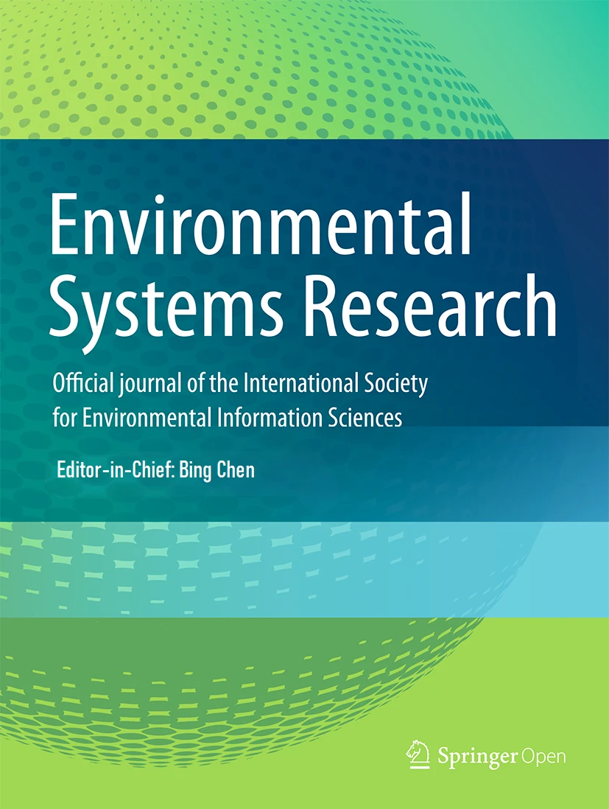

Md Abrar Hasin Parash
B.S. from the Department of Soil, Water and Environment
Faculty of Biological Science
University of Dhaka

"To broaden the horizon of knowledge in Soil Science."
I aspire to become a Soil Scientist, a Soil Microbiologist, and a Policy-maker regarding my area of expertise. I am passionate about soil mineral chemistry and biologically induced weathering, which puts me in a crucial intersection to understand the life-sustaining functions of the plant root zone or plant rhizosphere.
I have a research publication and an internship experience. And I aim to unfold the mysteries of soil-plant-microbiome interactions, to better understand agriculture, and to accelerate agricultural practices towards a sustainable future.



Behold! Let all these not define me, let the research and professional achievements not overshadow the creative parts of me. The incubation hub of ideas is inspired by a very niche place, where I can explore the beauty of the universe by reading, travelling, and solving the critical puzzles I usually enjoy, like chess, sudoku, and many more.
Explore ›››
You will be able to find my address and ways to contact me by visiting the contact page. Or can ask for a book which I have listed to give away in the Book Collection section of Life Through My Lens page.
Reach out ›››